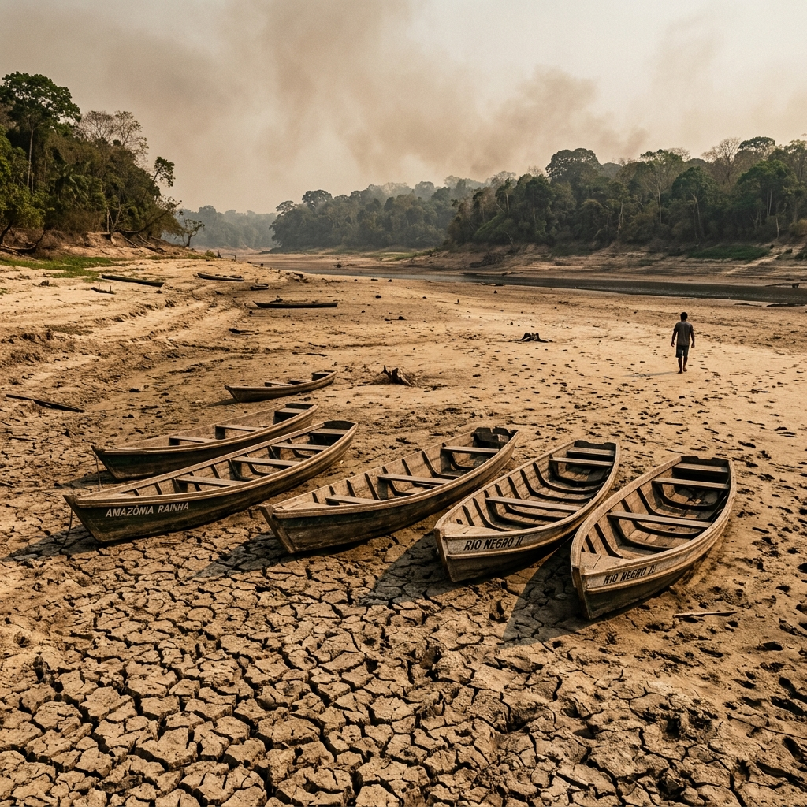

A Grande Seca de 2023 em Manaus
Em 2023, o Amazonas vivenciou uma das estiagens mais severas registradas na história recente. O nível do Rio Negro em Manaus atingiu a mínima histórica de 12,70 metros, isolando comunidades ribeirinhas, paralisando o transporte hidroviário e gerando severos impactos ambientais e sociais.
Esta plataforma foi criada para catalogar imagens panorâmicas de alta resolução das escolas rurais e comunidades atingidas, correlacionar os dados de satélite e oferecer um diagnóstico climático contínuo da região metropolitana.

Painel de Análise Climática Atual vs Histórica
Nota Metodológica & Fontes de Referência
1. Monitoramento Pluviométrico (Precipitação)
Os dados pluviométricos (chuvas acumuladas) e meteorológicos em tempo real (temperatura, umidade, evapotranspiração) são consultados dinamicamente via a API global da Open-Meteo.
A Open-Meteo consolida dados de reanálise atmosférica utilizando o modelo meteorológico ERA5 do Centro Europeu de Previsões Meteorológicas a Médio Prazo (ECMWF), combinando simulações físicas avançadas com dados históricos consolidados de satélites e estações de medição terrestre globais.
2. Monitoramento Fluviométrico (Nível do Rio Negro)
A cota diária (em metros) do Rio Negro é aferida por meio da régua física histórica instalada no centro da cidade de Manaus/AM (Estação Manaus - Código ANA: 00090000).
A medição e disponibilização das cotas diárias e médias mensais são realizadas pelo Porto de Manaus em cooperação com o Sistema de Alerta Hidrológico da Bacia do Rio Amazonas (SAH Amazonas), gerido pelo Serviço Geológico do Brasil (SGB / CPRM) sob regulação da Agência Nacional de Águas e Saneamento Básico (ANA).